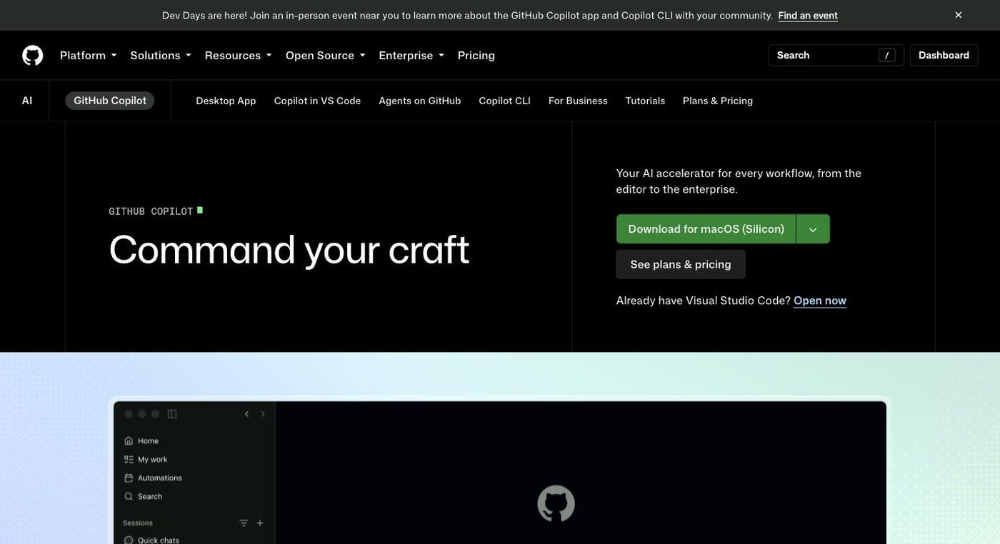

GitHub Copilot
AI assistant built into major IDEs and GitHub, now billed by usage credits

- Category
- Coding & Development
- Pricing
- Free (2,000 inline suggestions + 50 chat requests/mo); Pro $10/mo; Pro+ $39/mo; Max $100/mo; Business $19/user/mo; Enterprise $39/user/mo. Chat and agent use draws on AI credits.
- Best for
- Good for: individual developers who want a low-friction assistant in their existing IDE, and organizations on GitHub that need seat management, budgets, audit and IP indemnity.
- Official site
- github.com/features/copilot
- Last checked
- 2026-10-15
GitHub Copilot is a good default for developers and companies already on GitHub who want AI help without changing editors or procurement. Skip it as your first pick if your main goal is the strongest autonomous agent for large multi-file refactors, where Cursor and Claude Code are usually rated higher, or if you need a fixed monthly bill, since chat and agent use now draws down AI credits.
Copilot plugs into VS Code, Visual Studio, JetBrains IDEs, Xcode, Neovim and others, and into GitHub.com itself. Inline completions and next-edit suggestions are unlimited on paid plans and do not use credits. Chat, agent mode, code review, the cloud agent and the CLI do use credits, at a cost that depends on the model and task. Each plan includes a credit allowance, and you can set a dollar budget for extra usage at $0.01 per credit.
Good for: individual developers who want a low-friction assistant in their existing IDE, and organizations on GitHub that need seat management, budgets, audit and IP indemnity. Not for: people who want a free tool for daily heavy use (the Free tier runs out fast), anyone who needs predictable flat-rate agent usage, teams on GitHub Enterprise Server (Copilot is not available there), or developers who prioritise top agentic quality over convenience.
Key features
Inline completions and next-edit suggestions
Suggestions as you type, unlimited on Pro, Pro+, Max, Business and Enterprise and not billed in credits. Free is capped at 2,000 per month.
Copilot Chat
Ask about code, generate tests and explain errors in the IDE, on GitHub.com and in mobile. Uses AI credits on paid plans.
Agent mode
Plans and carries out multi-step changes across files, including running terminal commands. Uses credits; limited usage is available on Free.
Cloud agent
Hands a task to Copilot to work asynchronously and open a pull request. Not on Free; included from Pro up.
Code review
Automated review of pull requests. Not on Free; uses credits.
Model choice
One picker covering Anthropic, OpenAI, Google, xAI, Microsoft and Kimi models. GitHub's plans page lists the same models on all individual plans; each model burns credits at its own rate.
Copilot CLI and third-party agents
A terminal agent, plus third-party coding agents (preview) on Pro+ and Max.
Org governance
Business and Enterprise add access control, budget control, IP indemnity and pooled credits; Enterprise adds codebase indexing and custom private models.
Pricing breakdown
Copilot Free
- 2,000 inline suggestions per month
- 50 chat requests per month
- Limited agent and CLI usage
- No cloud agent or code review
Copilot Pro
- Unlimited inline suggestions
- $10 base AI credits plus $5 flex (about $15/mo of credits)
- Cloud agent and code review
- Can buy extra credits
Copilot Pro+
- Unlimited inline suggestions
- $39 base plus $31 flex (about $70/mo of credits)
- Third-party coding agents (preview)
Copilot Max
- Unlimited inline suggestions
- $100 base plus $100 flex (about $200/mo of credits)
- Everything in Pro+
Copilot Business
- 1,900 AI credits per user, pooled
- Cloud agent, code review, third-party agents
- Access, budget and governance controls, IP indemnity
- Sign-ups were being enabled gradually at last check
Copilot Enterprise
- Everything in Business
- 3,900 AI credits per user, pooled
- Codebase indexing and custom private models
- Priority access to new models
Pros and cons
Pros
- No switching cost: it runs inside VS Code, Visual Studio, JetBrains, Xcode, Neovim and more, plus GitHub.com
- Inline completions and next-edit suggestions are unlimited on every paid plan and never consume credits
- Every individual plan lists the same model catalog, so the plan mainly changes your credit allowance
- Overage is controllable: set a dollar budget with alerts at 75%, 90% and 100%
- Business and Enterprise pool credits across the org and add budgets, access control and IP indemnity
- The cloud agent links issues and pull requests natively, which standalone editors cannot match
Cons
- Chat, agent mode, code review, cloud agent and CLI all use credits; a heavy agent user can exhaust a $10 Pro allowance quickly and must pay for more
- Credit cost varies by model, so it is hard to predict monthly spend before you have usage history
- Free is small: 2,000 suggestions and 50 chat requests a month
- Enterprise at $39/seat requires GitHub Enterprise Cloud, so the real per-user cost is higher
- Not available for GitHub Enterprise Server
- Independent comparisons often rate Cursor and Claude Code ahead on complex multi-file agentic work (subjective, varies by task)
Alternatives to GitHub Copilot
Frequently asked questions
Is GitHub Copilot free?
Yes, within limits: 2,000 inline suggestions and 50 chat requests per month, plus limited agent and CLI use. The cloud agent and code review need a paid plan.
What does Copilot cost?
Individuals: Pro $10/mo, Pro+ $39/mo, Max $100/mo. Organizations: Business $19 and Enterprise $39 per user per month. Check GitHub's plans page for current figures and any annual option.
Do code completions use up my credits?
No. Inline completions and next-edit suggestions are unlimited on paid plans. Chat, agent mode, code review, cloud agent and CLI use AI credits (1 credit = $0.01).
What happens when I run out of credits?
You can set a dollar budget for extra usage at $0.01 per credit; alerts fire at 75%, 90% and 100% of it. Without a budget, credit-based features stop until the next cycle.
Does Enterprise need GitHub Enterprise Cloud?
Yes. Business does not state that requirement. Copilot is not available on GitHub Enterprise Server.
Ready to try GitHub Copilot?
Head to the official site to explore pricing and start a free trial where available.
Visit GitHub Copilot →